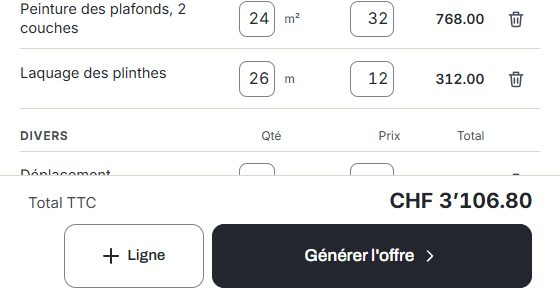
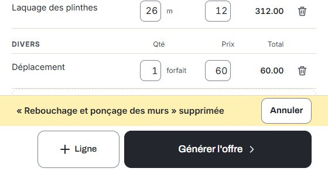
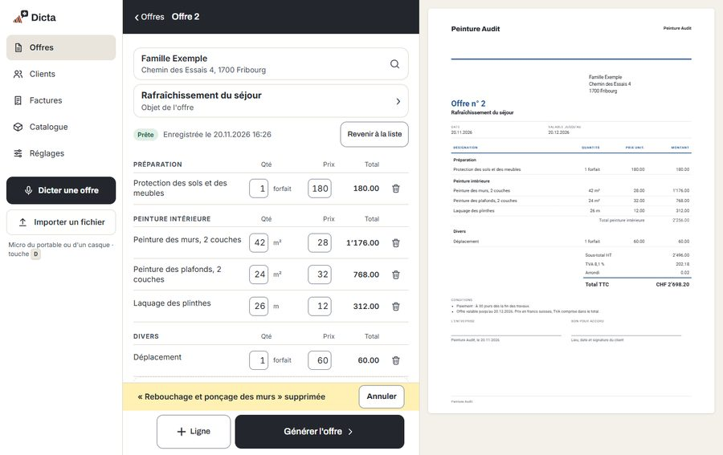
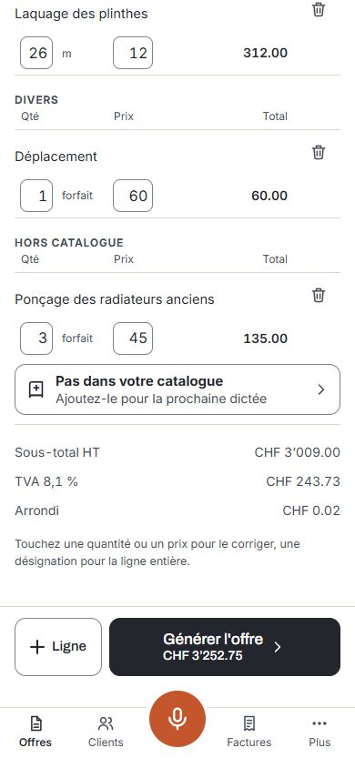
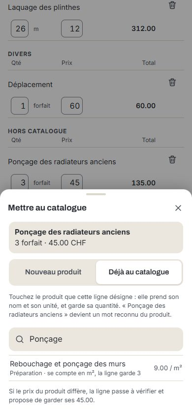
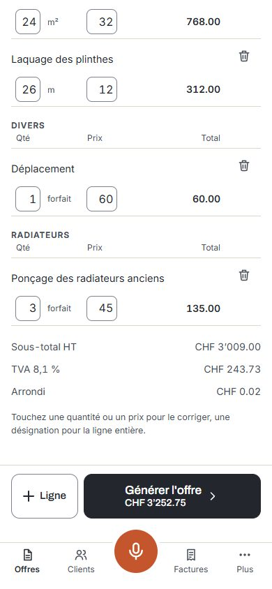
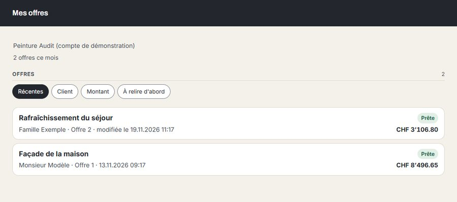
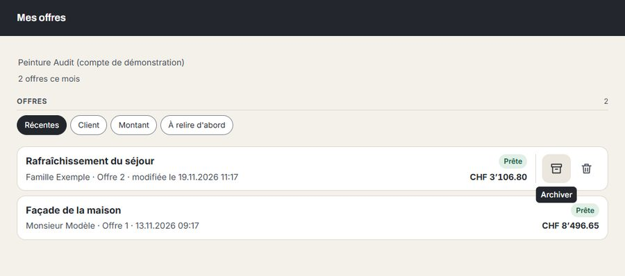
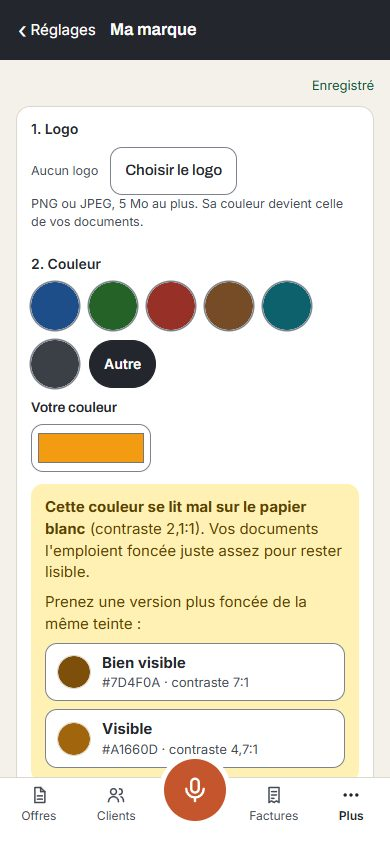
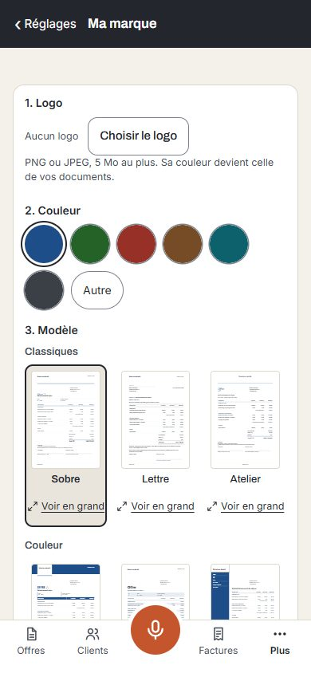

Responsive : ce qui est sur le site de test
Déployé le 20.11.2026, commit 257d800, sonde verte. Les captures viennent du site de test (compte d'audit, données inventées), sauf 4a et 4b : ce compte n'a pas de ligne hors catalogue, elles viennent de ma recette locale, même code.
Seul le bandeau du PC (7a) attend ton choix, sous ses images. Pour le reste, tu regardes sur le test et tu me dis ce qui cloche.
7a. Le bandeau « Annuler » au PC
Ta remarque. « Le blanc ne suffit pas. » Le bandeau prend la place de la ligne du total, avec ses marges. Fond jaune pâle, texte en gras, « Annuler » en bouton encadré, aligné sur le bord droit de « Générer l'offre ». Il reste 8 secondes, puis le total revient. Contraste mesuré : aucun texte sous 7:1.



Ton choix
Le reste du 5e tour, en ligne
3. Le total dans « Générer l'offre » (téléphone et tablette)

« + Ligne » garde son dessin actuel (ton choix).
4a et 4b. La ligne hors catalogue et sa fiche



Au rattachement à un produit d'un autre prix, la ligne prend le produit, garde son prix en note (« Prendre 45.00 ») et passe en jaune, à vérifier.
5. Archiver et supprimer au PC


2b. La couleur


L'avertissement est celui du chantier des modèles, fait pendant que je codais le mien : il marche aussi sans JavaScript, j'ai gardé le sien. J'ai ajouté les six pastilles à 7:1, que tu avais validées ; chez lui, elles restaient sous 7:1.
Aussi en ligne : les tours 1 à 4
- Lignes de l'offre : champs légers à 16 px (le zoom de l'iPhone, tâche 502), largeur à la saisie, corbeille en face du nom au téléphone.
- Téléphone couché et PC étroit : onglets en colonne à gauche, micro au milieu. Tablette : écrans sur 720 px.
- Boutons : bord gris des secondaires, rond qui tourne pendant l'envoi, cibles de 48 px.
- Annuler une facture : page résumée, deux boutons rouges ; « Annulation impossible » pour un acompte déduit.
- Facture annulée : PDF « Annulée » sans paiement ; « Envoyer » seulement si elle était partie, sinon « Télécharger le PDF ».
- Facturer au PC : facture plus grande, bouton « Agrandir la facture ».
- Mots du PC, « + Ligne », total une seule fois, logo de la connexion, pastille anthracite, « Voir en grand » dans la carte, assistant qui descend à l'erreur, facture sur tablette debout.
Pas en ligne : la police du PDF (9c) est passée au chantier des modèles, qui a ses propres polices.
Copier mes réponses
Ce texte se remplit avec tes choix. Copie-le et colle-le dans la conversation.
Copié.